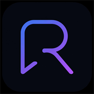

Проверка криптографии, формата медиа, безопасного HTML и IndexedDB. Открывайте через локальный сервер или GitHub Pages.
Тесты не трогают ваши чаты: используется временный ключ в IndexedDB, который сразу удаляется.